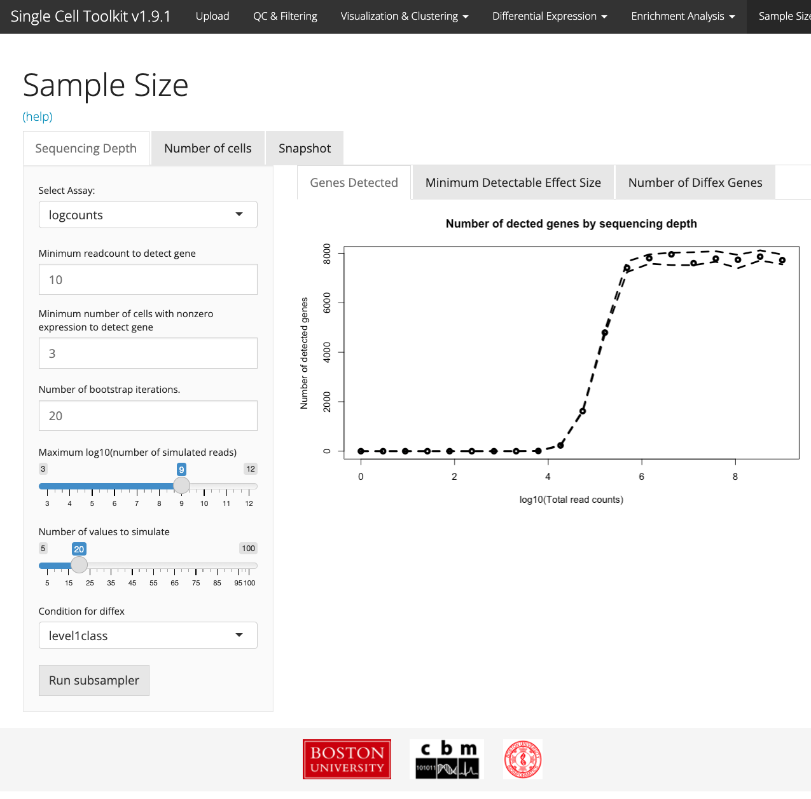
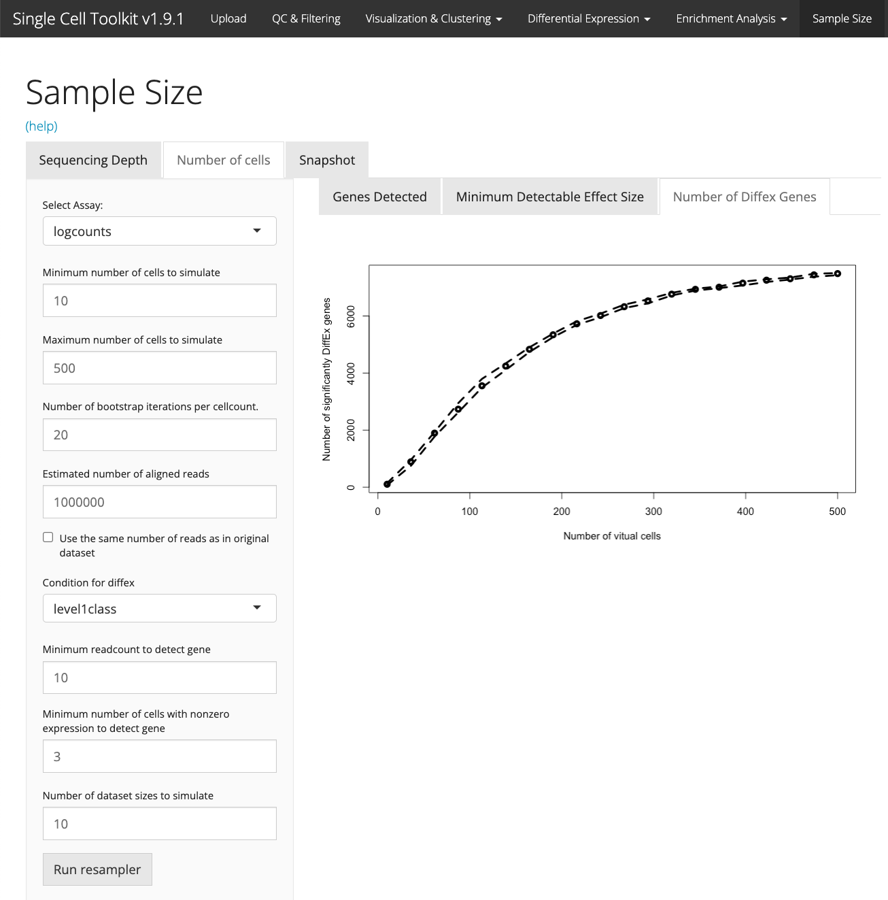
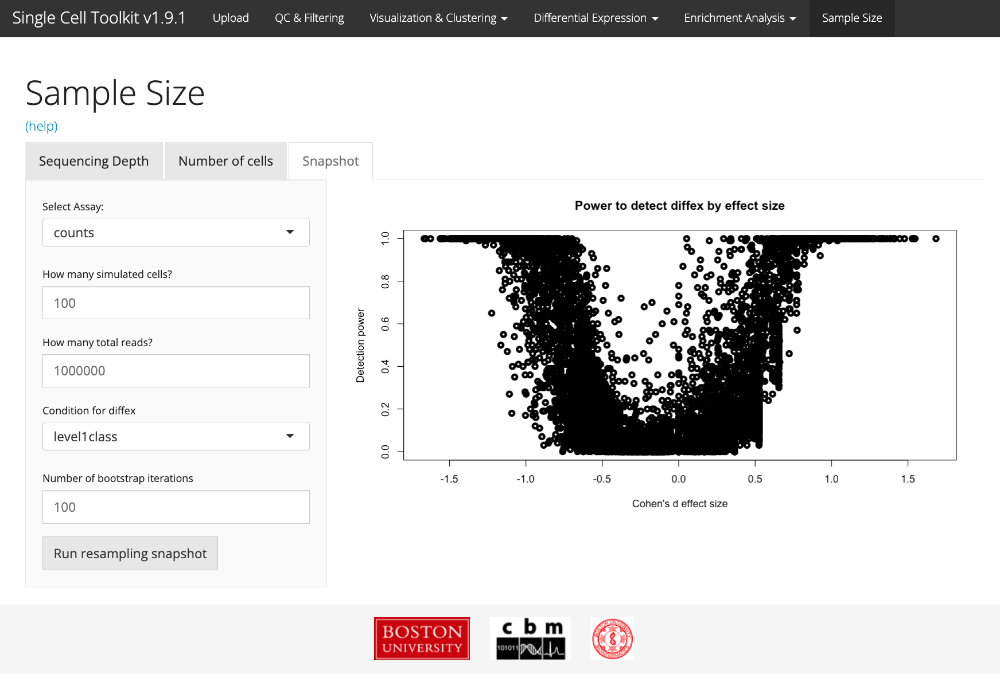

vignettes/v09-tab07_Sample-Size.Rmd
v09-tab07_Sample-Size.RmdThe Sample Size tab allows users to create simulated datasets built from their real data, and to perform power calculations to help guide future experimental designs. The subsampler will display summary statistics for number of detected genes, number of significantly differentially expressed genes, and minimum detectable effect sizes for simulated datasets of varying design.
In the ‘Sequencing Depth’ tab, you can see how the statistical power of simulated experiments changes as the number of sequencing reads is changed. You can specify the minimum and maximum number of reads to simulate, select whether those parameters are total reads per experiment or reads per cell (default is total reads/experiment), and choose a condition for differential expression assesment from your sample annotations. The chosen condition for differential expression should be a discrete variable. For expediency, differential expression is performed using either a t-test if exactly two groups are detected for the chosen condition, or an ANOVA if more than two groups are detected. The toolkit will only run the simulations once you click the ‘Run Subsampler’ button.
Simulated datasets will not be permanently saved. Instead, summary statistics will be saved for each simulation, and plotted in the “Genes Detected”, “Minimum Detectable Effect Size”, and “Number of Diffex Genes” tabs. Solid lines represent median values at each simulated sequencing depth, wile dotted lines represent the upper and lower quartiles.

In the ‘Number of Cells’ tab, you can see how the statistical power of simulated experiments changes as the number of cells is changed while keeping the total number of reads for the experiment constant. You can specify the minimum and maximum number of cells to simulate, specify how many total reads each simulated counts matrix should have, and choose a condition for differential expression assesment from your sample annotations. The chosen condition for differential expression should be a discrete variable. For expediency, differential expression is performed using either a t-test if exactly two groups are detected for the chosen condition, or an ANOVA if more than two groups are detected. The toolkit will only run the simulations once you click the ‘Run Subsampler’ button.
Simulated datasets will not be permanently saved. Instead, summary statistics will be saved for each simulation, and plotted in the “Genes Detected”, “Minimum Detectable Effect Size”, and “Number of Diffex Genes” tabs. Solid lines represent median values at each simulated sequencing depth, wile dotted lines represent the upper and lower quartiles.

In the ‘Snapshot’ tab, you can simultaneously specify both the number of cells and the total number of reads to be produced in each simulated experiment. Rather than giving you an impression of how statistical power would be affected by a variable experimental design, this tab shows a more detailed assesment of a single proposed design.
In the snapshot plot, we show a scatterplot of all genes detected in your input dataset. The x-axis represents the empirical cohen’s-d effect size for genes; cohen’s-d is defined as the mean expression level for a gene in condition A minus the mean expression level in condition B, divided by the pooled standard deviation in expression of that gene across all cells. If your chosen condition of interest has more than two groups, the largest two groups will be compared. The y-axis shows the portion of simulated datasets in which a gene was found to be significantly differentially expressed between groups. This should be interpreted as an estimate of statistical power.

## R version 4.1.2 (2021-11-01)
## Platform: x86_64-apple-darwin17.0 (64-bit)
## Running under: macOS Big Sur 10.16
##
## Matrix products: default
## BLAS: /Library/Frameworks/R.framework/Versions/4.1/Resources/lib/libRblas.0.dylib
## LAPACK: /Library/Frameworks/R.framework/Versions/4.1/Resources/lib/libRlapack.dylib
##
## locale:
## [1] en_US.UTF-8/en_US.UTF-8/en_US.UTF-8/C/en_US.UTF-8/en_US.UTF-8
##
## attached base packages:
## [1] stats graphics grDevices utils datasets methods base
##
## other attached packages:
## [1] BiocStyle_2.22.0
##
## loaded via a namespace (and not attached):
## [1] rstudioapi_0.13 knitr_1.38 magrittr_2.0.3
## [4] R6_2.5.1 ragg_1.2.2 rlang_1.0.2
## [7] fastmap_1.1.0 stringr_1.4.0 tools_4.1.2
## [10] xfun_0.30 cli_3.2.0 jquerylib_0.1.4
## [13] systemfonts_1.0.4 htmltools_0.5.2 yaml_2.3.5
## [16] digest_0.6.29 rprojroot_2.0.3 pkgdown_2.0.2
## [19] bookdown_0.25 textshaping_0.3.6 BiocManager_1.30.16
## [22] purrr_0.3.4 sass_0.4.1 fs_1.5.2
## [25] memoise_2.0.1 cachem_1.0.6 evaluate_0.15
## [28] rmarkdown_2.14 stringi_1.7.6 compiler_4.1.2
## [31] bslib_0.3.1 desc_1.4.1 jsonlite_1.8.0